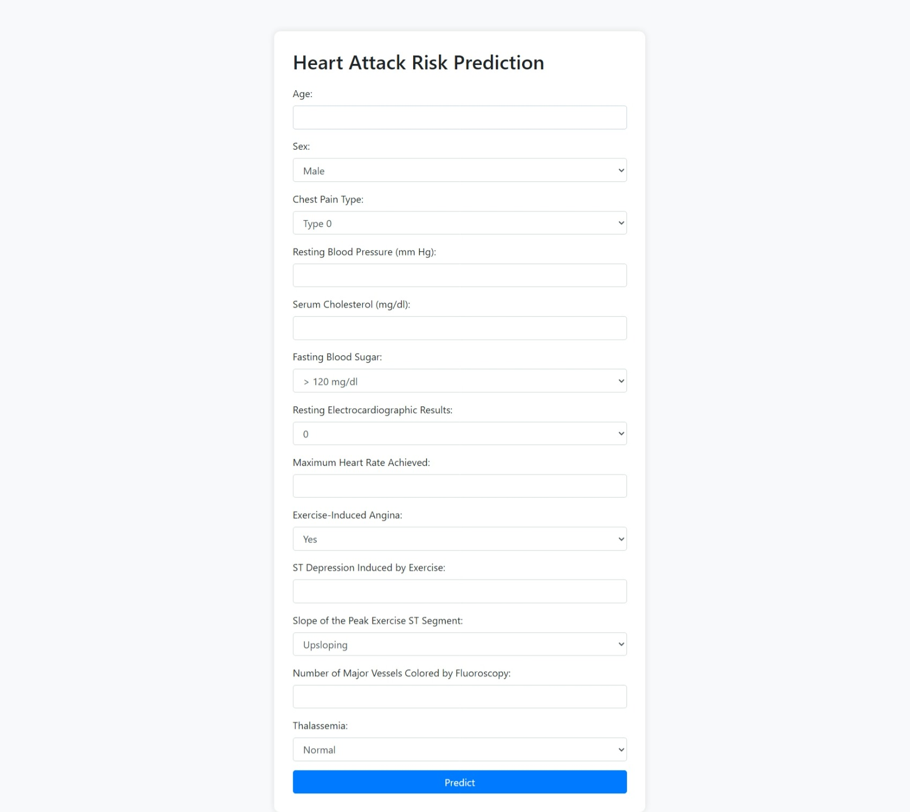

Webpage Interface Snapshots

Snapshot 1: The homepage of the Heart Attack Risk Prediction tool, where users can input their medical data to predict the risk of a heart attack.

Snapshot 2: The prediction result page, which shows whether the model predicts a risk of heart attack based on the input data.